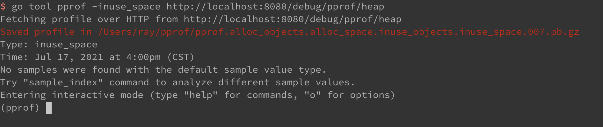
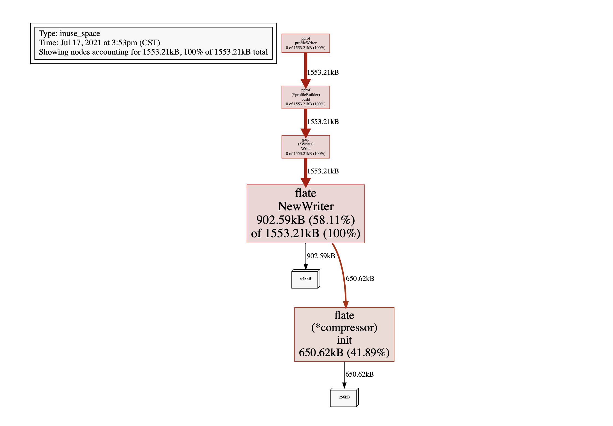

一文入门 Go 的性能分析
Go 为了实现更高的并发，自己实现了用户态的调度器，称之为 GMP 模型，在上一篇文章中，我们已经简单分析了它的实现。由于自己实现了 goroutine 的调度器，这也会让代码的执行过程更加复杂。而代码在执行的过程中，有可能会出现性能问题，单纯的通过日志很难排查，这就需要其他的方式来辅助。
Go 提供了一些工具，可以在代码运行的过程中采集一些信息，并且可以根据这些信息去生成可视化的图表，然后更方便排查问题。这些工具 Go 原生就提供了，不需要再引入其他的库。
在对程序进行分析，特别是对线上问题分析的时候，需要先采集数据，只有采集到数据后才能进行后续的分析，所以这篇文章我们也从两个部分出发，一部分是采集数据，另一部分是如何对采集到的数据进行分析。
1. 采集信息
1.1 pprof
这个工具是 Go 提供监控工具，可以实时采集程序运行过程中的性能数据。在 Go 中，有两个 pprof 的包：
- runtime/pprof
- net/http/pprof
其中 net/http/pprof 是对 runtime/pprof 进行了封装，提供了 Web 环境的下的访问接口，通常我们使用这个就可以。
这个包的使用也很简单，对于 Web 服务来说，只需要在 main.go 中引入这个包：
package main
import (
"context"
"fmt"
"net/http"
_ "net/http/pprof" // 引入 pprof 包
"time"
)
func main() {
http.HandleFunc("/index", func(writer http.ResponseWriter, request *http.Request) {
writer.Write([]byte("index"))
})
fmt.Println("server starting")
http.ListenAndServe(":6060", nil)
}
对于非 Web 程序，可以通过下面的方式启动 pprof：
import (
"fmt"
"net/http"
_ "net/http/pprof"
)
func main() {
// 其他代码
go func() {
fmt.Println(http.ListenAndServe("localhost:6060", nil))
}()
// 其他代码
}
配置好了之后，直接就可以通过 http://localhost:6060/debug/pprof/ 来采集具体的数据了，在浏览pprof 提供的接口如下：
- /debug/pprof/allocs : 获取内存分配的抽样数据
- /debug/pprof/block ：获取导致同步阻塞的堆栈
- /debug/pprof/cmdline：获取当前运行程序的命令行路径
- /debug/pprof/goroutine：获取 goroutine 的执行堆栈
- /debug/pprof/heap：当前活动对象内存分配的抽样（也就是堆栈内存）
- /debug/pprof/mutex：获取互斥锁的持有者
- /debug/pprof/profile：获取 CPU 的抽样信息
- /debug/pprof/threadcreate：获取创建的线程信息（内核态线程）
- /debug/pprof/trace：获取当前程序执行的轨迹（获取 GMP 以及 goroutine的调度信息）
1.2 直接在程序中获取
除了通过上面的 http 接口方式采集信息，还可以直接在代码中使用代码获取信息，比如获取 trace 信息：
f, err := os.Create("trace.out")
if err != nil {
panic(err)
}
err = trace.Start(f)
if err != nil {
panic(err)
}
获取 CPU 的信息：
var cpuprofile = flag.String("cpuprofile", "", "write cpu profile to `file`")
flag.Parse()
if *cpuprofile != "" {
f, err := os.Create(*cpuprofile)
if err != nil {
log.Fatal("could not create CPU profile: ", err)
}
defer f.Close()
if err := pprof.StartCPUProfile(f); err != nil {
log.Fatal("could not start CPU profile: ", err)
}
defer pprof.StopCPUProfile()
}
获取内存信息：
var memprofile = flag.String("memprofile", "", "write memory profile to `file`")
if *memprofile != "" {
f, err := os.Create(*memprofile)
if err != nil {
log.Fatal("could not create memory profile: ", err)
}
defer f.Close()
runtime.GC()
if err := pprof.WriteHeapProfile(f); err != nil {
log.Fatal("could not write memory profile: ", err)
}
}
但这种写代码采集的方式其实不太好，一方面，需要硬编码到代码中，特别是对于线上的代码，不好控制，所以这种方式一般不会在线上使用，线上还是会使用 Http 接口来采集信息。
1.3 使用 Http 接口采集信息
上面介绍了 pprof 的 Http 接口，在这里我们以采集 CPU 信息为例，可以直接在命令行使用：
curl http://localhost:8080/debug/pprof/profile?seconds=3 -o cpu.pprof
上面的这条命令表示对 CPU 的信息采集三秒，然后输出到 cpu.pprof 文件中，这里文件名的后缀可以随意定义，定义为 .txt、.out、.pprof 都可以。
还可以采用另一种输出方式，直接采用重定向的方式输出到文件：
curl http://localhost:8080/debug/pprof/profile?seconds=3 > cpu.pprof
其他的信息，比如 trace 和 heap，都是采用同样的采集方式，加上 seconds，就可以设定采集的秒数。在线上环境中，这种方式很有用，既可以方便的采集到信息，又不会影响线上服务的运行。
2. 可视化分析
采集到数据之后，就需要进行分析，在进行数据分析的时候，我们需要用到两个工具：
- go tool pprof
- go tool trace
go tool pprof 可以对采集到的 CPU、内存等信息进行分析，go tool trace 则是对采集的 trace 信息进行分析。
2.1 在线分析
go tool pprof 既可以对采集到的离线数据进行分析，也可以是结合上面的 pprof Http 接口，直接在线上进行分析，比如分析程序的内存使用情况:
$ go tool pprof -inuse_space http://localhost:8080/debug/pprof/heap
go tool pprof 可以搭配的参数很多，在这里就先不展开了，上面加的 -inuse_space 就表示采集正在使用中的内存信息。
执行完这条命令之后，就可以进入到一个交互式的命令行：

在 这里输入 help 就可以看到所有支持的命令，发现支持的命令非常多，这里也先不都展开了。在这里用的比较多的命令是 top，输入 top 之后就可以看到占内存从大到小的排列，输入 top 10，就只会展示前 10 个。
还可以输入 web，直接以网页的形式展示结果（但这种方式在线上环境中通常用不了）：

通过这个图，可以直接看图的底部，基本就可以看出来那些对象占据的内存比较多，是否有内存泄漏基本也可以看出来。
在网页上在查看图形化结果的时候，需要安装 graphviz 库。在 Mac 上安装很简单，直接使用 Homebrew 进行安装（Homebrew 是 Mac 系统下的包管理软件，类似 Centos 中的 yum，Ubuntu 中的 apt），在 linux 系统上的安装过程类似：
$ brew install graphviz
2.2 离线分析
这些图形化的结果在生产环境通常是看不了的，所以很多时候还是会把这些信息采集下来，然后在本地进行分析。内存分析的方式基本和上面一样，采集到信息之后，在本地运行：
$ go tool pprof memory.prof
这样执行命令之后，也会进入一个与上面一样的交互式命令行环境。
$ go tool pprof -http=:8080 memory.prof
这样会与输入 web 得到的效果是一样。
对于内存信息的分析，直接在线上分析就可以，但是对于 tarce 的分析，无法在线上完成，只能通过线下的方式完成。
采集 trace 信息：
$ curl http://localhost:8080/debug/pprof/trace\?seconds\=10 > trace.out
开始分析 trace 信息：
$ go tool trace trace.out
命令执行之后就会打开一个网页，提供了各项分析的指标：
![(2.png)
- View trace：可以查看 Goroutine 的可视化调度轨迹，都是以图形的方式展示
- Goroutine analysis：可以查看到 goroutine 启动的数量及执行的时间
- Network blocking profile：对网络阻塞的分析
- Synchronization blocking profile：对同步阻塞的分析
- Syscall blocking profile：对系统调用阻塞的分析
- Scheduler latency profile：对调度器延迟的分析
在进行问题排查的时候，可以先从调度器的总体的延迟看起，找到延迟比较大的区域，然后进行分析，是网络的原因、还是锁的原因、或者是系统调用的原因。
3. 小结
这篇文章中，我们介绍了 Go 语言常用的性能分析工具，特别是在分析线上数据的时候，需要先采集数据，采集到数据之后，再对数据进行分析。而 Go 刚好都提供了相应的工具，pprof 和 go tool trace，大大简化了 Go 程序分析的难度。
文 / Rayjun